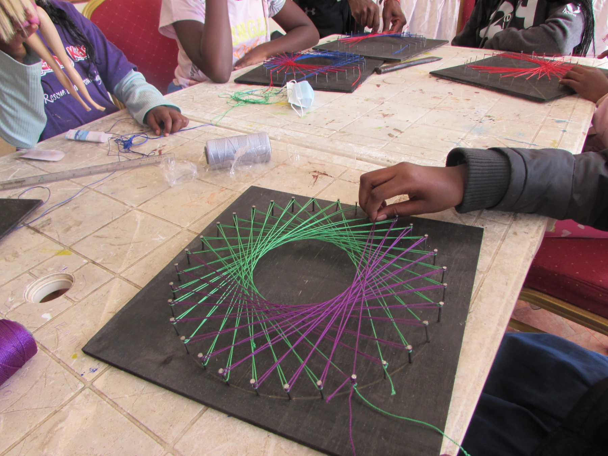

What is it about successful people that makes them stand out. Could it be that unlike others, they were just born lucky? No, it can’t be. I think it’s the resilience in them to see things through; striving forward even through the tough times. Falling down and standing up time and time again and enduring through the storm. Yes, this must be it!
On arrival, we dove straight into some ice-breaking games to set the mood. We played a different kind of the ‘Broken Telephone’ game where instead of mimicking a spoken word or sentence, we mimicked an action.
Guys also begged to play their beloved ‘Police and Robber’ game for a few minutes and so they did.
On to the main lesson of the day, resilience. The art of standing up every time you fall down and keeping on trying. We watched these clips to teach us more on the topic.
First: The Hugging Tree.
Then, A Story About Resilience
A great quote from ‘The Story About Resilience’ which was so powerful to us was:
You were knocked down, you fell over, you were pushed to the ground, but you always got up; you never stayed down.
The Story About Resilience
Afterwards, we got to enjoy a coloring session of two print outs quoting; My challenges help me grow.
and amazing things happen when you try
All in all it was a special session this one, probably the highlight of the day. No wait, we spoke too soon, read on to discover why.
In need of a break, we took some tea and headed outside to play some games and even football.
The craft was definitely the highlight of the day, because it was so much fun to do. Here’s a progress shot.
And here are the some nice pictures of guys posing with their projects. It’s not yet done though, but we must say it looks really amazing so far!
Presentation time! If you’re sad, this beautiful girl’s song will remind you that God is always on your side and if you know this, you’ll be happy.
Finalizing the presentations, we had this amazing duo do a poem for us.
As you can see, we had an amazing day. We wish we could stay a bit longer but sadly we have to go. See you next week, same place, same time. Bye, and always remember that ….